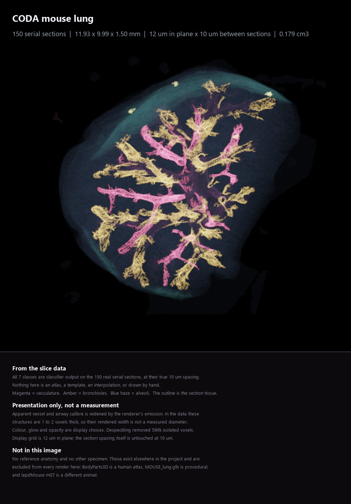
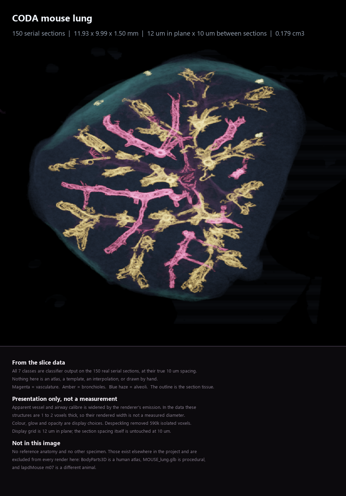
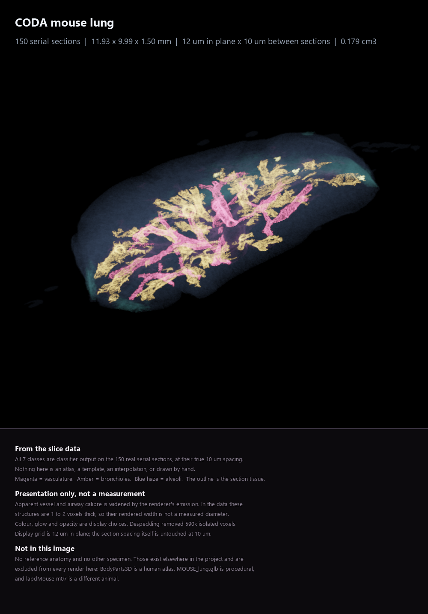
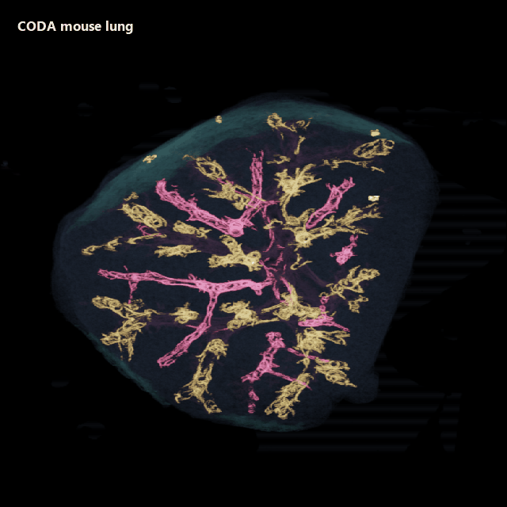

Five stages, run in order on the GPU server
Parameters are the tutorial's own throughout. Section 4 trains on the annotation set, 4.5 applies that model to every slice, and 5 and 6 warp the result into a shared coordinate frame and stack it into a volume.
-
Section 3tissue masks + registration
Segmentation of tissue and pairwise alignment
One tissue mask per section, then a global affine plus an elastic warp between every consecutive pair so the stack is physically coherent before anything is classified.
-
Section 4train the classifier
DeepLabv3+ / ResNet-50, 8 epochs
Trained on 1500 tiles cut from 5 annotated sections, on the raw class counts as sample weights. Learning rate 0.0005 decaying by 0.75 each epoch. Final validation loss 0.02596.
-
Section 4.5apply to all 150
Classify every slice at full resolution
Each 9330 × 9950 image is tiled at 1000 px and run through the network, with tiles that contain no tissue skipped before inference.
-
Section 5warp to a shared frame
Apply the Section 3 warps to the classified images
The section-to-section transforms were computed on the low resolution images, so they are scaled up by 10 and applied to the 1 µm classified output.
-
Section 6build the volume
Downsample and stack into a label volume
In-plane downsampling of 4 gives 4 µm pixels; the section spacing stays at 10 µm, so the finished voxel is 4 × 4 × 10 µm. The stack is cropped to the tissue.
The corrected reconstruction
Volume ray marching, emission and absorption, parallel projection. The colours are the classifier's own class palette: magenta is vasculature, amber is bronchioles, and the pale blue haze is alveolar parenchyma.




40 frames, 20 fps, one full rotation GIF fallback · Download MP4

What in those images comes from the slice data
Everything in the render is classifier output on the real sections. That is not obvious from looking at it, and two things that are not measurements can easily be read as if they were. The table separates the three cases.
| Element in the render | Where it comes from | Status |
|---|---|---|
| Vasculature, magenta | Class 3, classifier output on the 150 sections | data |
| Bronchioles, amber | Class 1, same source | data |
| Alveoli, stroma, nonexpanded, cancer, background | Classes 2, 7, 5, 4, 6 | data |
| Outer silhouette | The tissue mask of each individual section | data |
| 1.5 mm thickness | 150 sections at their real 10 µm spacing | data |
| Apparent calibre of vessels and airways | Widened by the renderer's emission. The labelled structures are 1 to 2 voxels thick in the data, so the rendered width is not a diameter | presentation |
| Colour, glow strength, opacity | Display parameters chosen by hand | presentation |
| 590,000 removed voxels | Despeckle filter on isolated components below 250 voxels | processing |
| 12 µm in-plane grid | Display resampling, smoother than the raw 4 µm grid | processing |
| Anatomy that is not the specimen | No reference anatomy and no other animal appears in any render on this page | excluded |
Deliberately kept out
Three assets in this project are not the specimen and would be misleading inside a reconstruction. They exist, they are useful for other purposes, and none of them is used above.
LUNG_anatomical.glb is a human lung from the BodyParts3D atlas, which is
the wrong species. MOUSE_lung.glb is a set of procedural lobes built from
sphere primitives, so the shape is invented rather than imaged.
lapd_m07/ is the lapdMouse archive of a different mouse, a C57BL/6 male of
24.1 g, with its own airway tree, and it can be compared against this reconstruction but
not merged into it.
If any of those ever appear in a figure beside this volume, they need a label saying which one is the measurement and which is a reference.
Same data, same classifier. One number was wrong
Both of these are the identical 1.117 billion voxel volume. The only difference is how the renderer mapped it into space. On the left, z is stretched about eight times; on the right, each axis carries its real physical extent.

The surface reads as a stack of horizontal plates. A 1.5 mm slab was being drawn as a thick block, so the 150 sections became visible edges.
Continuous surface, no stacking lines, and the branches read as tubes rather than frayed sheets. Vessel and airway trees separate cleanly by colour.


Five defects, in order of how much they mattered
Only the first one is what people noticed. The rest were each contributing their own artefact on top of it.
-
the dominant one
01
The aspect ratio was destroyed by normalisation
The volume is 11.93 × 9.99 × 1.50 mm, but the renderer mapped each axis onto [-0.5, 0.5] independently. That stretches z by roughly eight times and turns a thin slab into a block, which is exactly why the sections showed up as plates.
The fix is to scale every axis by its share of the largest physical dimension before converting back to voxel indices.
-
02
The camera was inside the volume
Building the ray direction by normalising a per-pixel vector makes every ray diverge from the origin, which sits inside the data. The first render was a starburst of spokes converging on the centre.
-
03
In-plane sampling was coarser than z
An early version downsampled xy four times to 16 µm while resampling z to 4 µm. That is anisotropy in the opposite direction to the data's own, and it made the lateral detail visibly worse than claimed.
-
04
Parenchyma emission was far too high
A ray crosses about 700 steps, so even a small per-step value accumulates into a white haze that flattens everything inside it. Emission is now near zero on the parenchyma classes and absorption carries the structure instead.
-
05
Single-voxel specks in the background
The classifier scatters isolated one-voxel islands of every class through the empty space. At render time those become hundreds of coloured dots floating in the black. Filtering connected components below 250 voxels removed about 590,000 of them.
What the volume is made of
Per-class voxel counts, converted with the true voxel volume
0.004 × 0.004 × 0.010 mm³.
| Class | Voxels | Volume mm³ | Share |
|---|---|---|---|
| Alveoli | 115,941,596 | 18.551 | 10.4 % |
| Vasculature | 1,424,078 | 0.228 | 0.13 % |
| Bronchioles | 2,088,352 | 0.334 | 0.19 % |
| Stroma | 9,317,596 | 1.491 | 0.83 % |
| Nonexpanded | 8,122,270 | 1.300 | 0.73 % |
| Cancer | 141,801 | 0.023 | 0.013 % |
| Background | 980,246,957 | 156.840 | 87.7 % |
| Total | 1,117,282,650 | 178.766 | 100 % |
This is a slab, not a whole lung
1.5 mm of tissue out of a 10 to 20 mm organ
150 sections at 10 µm spacing is 1.5 mm of tissue. A mouse lung is roughly 10 to 20 mm long and about 1.3 cm³ in volume, so this stack samples close to 14 % of the organ. That is a real and representative block, but it is not the whole shape.
The consequence is visible in every render: the result reads as a tissue block with a bronchovascular tree inside it, rather than as an anatomically recognisable lung. A whole-lung silhouette would need several hundred more sections. This is a property of the dataset, not of the pipeline.